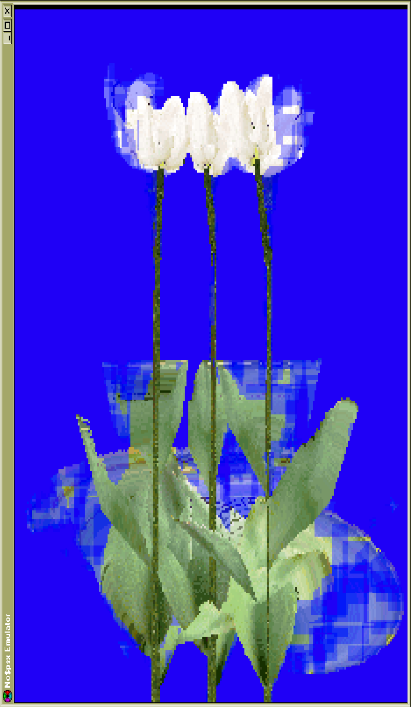
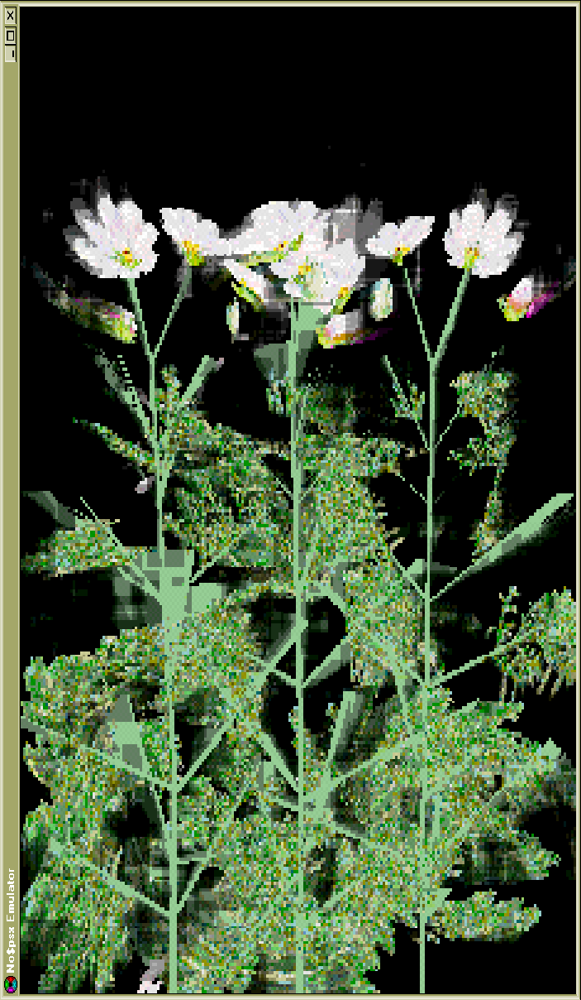
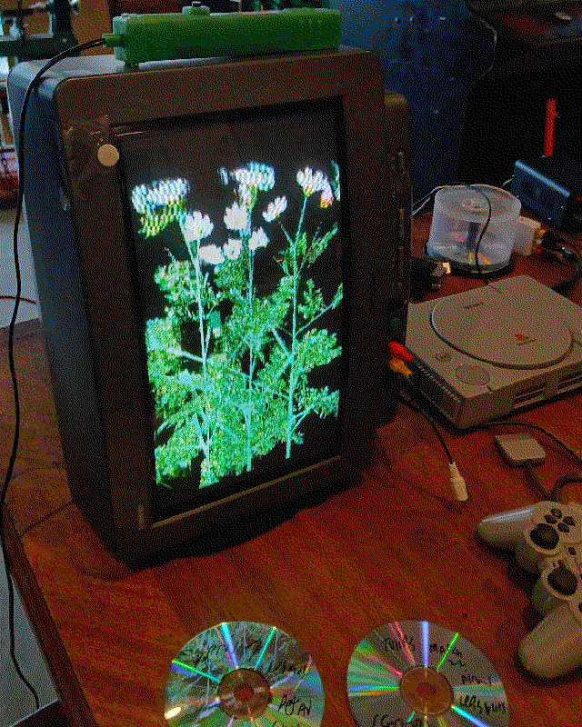

This is in-progress work (as of May 2026) - using the original ps1 development libraries (PSYQ), I'm making some generative sketches that are burned to CDs and run on a real playstation 1. Right now it's mostly flower scenes and landscapes. A lot of people don't like PSYQ, but I've really been enjoying it, working in a winxp virtual machine is an incredible break compared to modern windows.
The ps1 is very very interesting visually, there are a lot of visual artefacts that I want to explore and make work about. A lot of the "playstation 1 styled" games/work I see don't really capture what I think is interesting/beautiful about the system, and end up focusing too much on vertex wobble or keeping a super low polycount. The ps1 has some 3d issues but it's really capable of making beautiful and realistic graphics (ridge racer type 4!). I really just want to try and experiment and see what happens, and hopefully once I get a bit better at woodworking, make some video sculpture based on this work.


